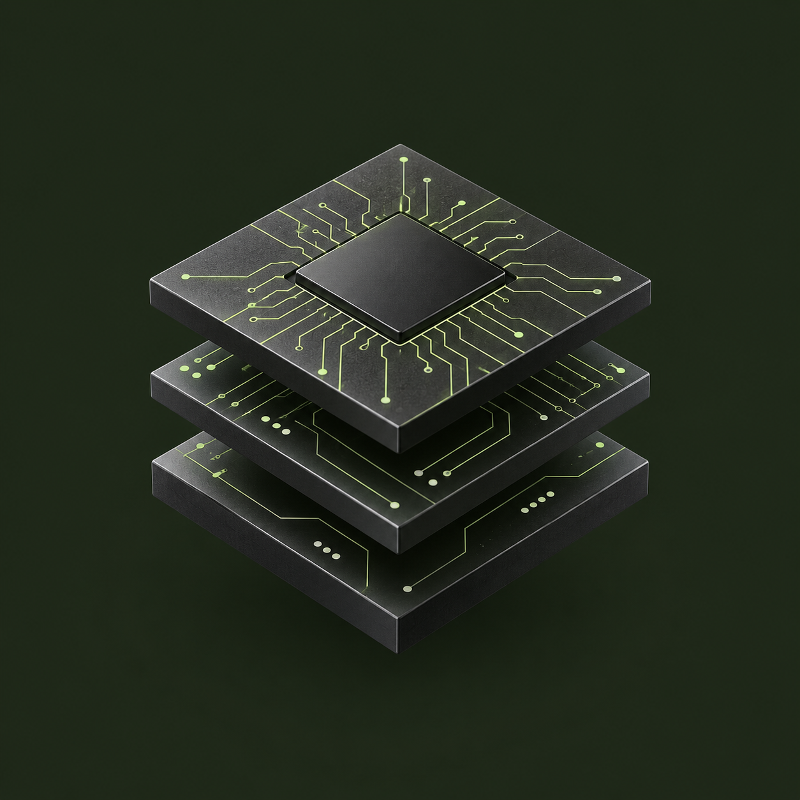

AXI4-Stream
Packet Filter Verification
A reusable, layered UVM testbench for a streaming packet filter, with functional coverage, cross-coverage, and SystemVerilog assertions. Extended the DUT with XOR checksum computation and appending.
Verification approach
Built full UVM testbench infrastructure to exercise the packet filter, detect protocol and functional bugs with assertions, and track behavior through covergroups and cross-coverage. Verified the checksum extension with 100% coverage closure.

COVERAGE CLOSURE100%For the XOR checksum extension
CORE FOCUSReusable testbench architecture
Protocol checking
Functional coverage